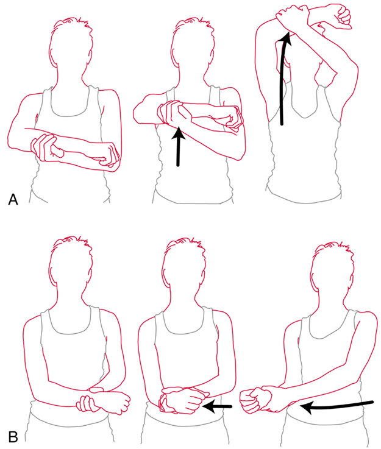
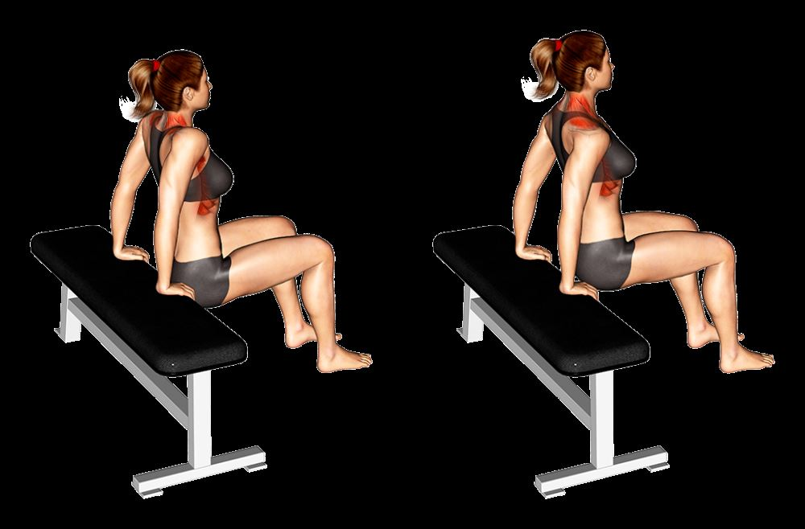
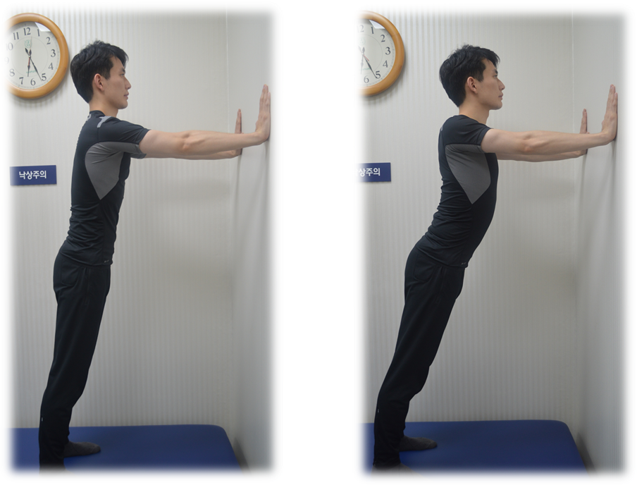
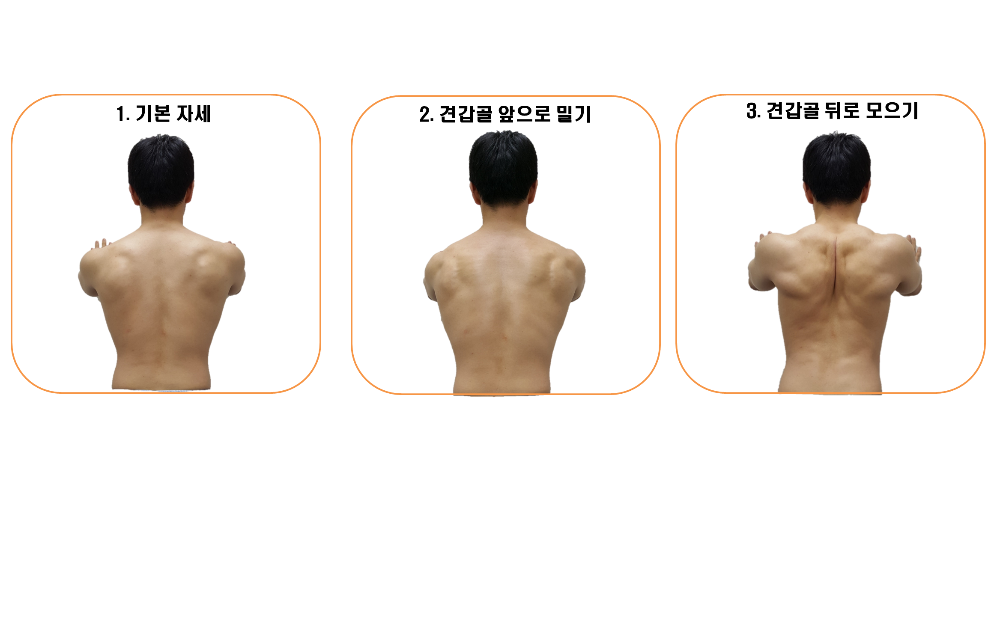
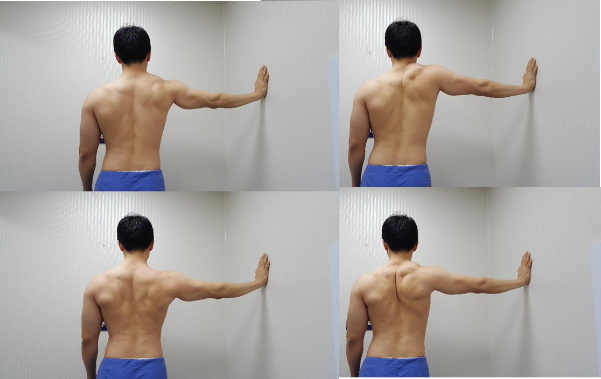
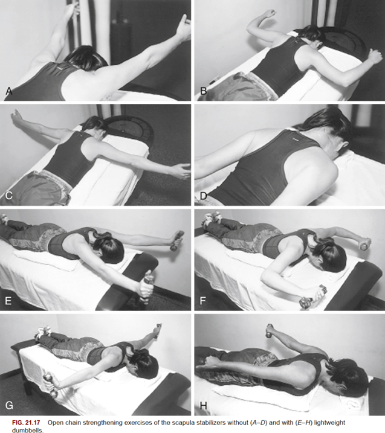

회전근개 재활운동 프로토콜
1단계 : 통증 및 염증 조절, 견갑가동성 향상
- 목표: 어깨관절 유연성, 견갑골 주변근육 유연성, 체간 자세 회복.
- 프로그램 요약
- 개요 : 어깨관절과 견갑골 주변근육의 유연성회복과 활성화를 위한 스트레칭 운동 및 어깨 거들(shoulder girdle)을 정상 자세로 회복시키고, 라운드숄더를 교정
- 도수기법 : 견갑흉곽 가동화
- 운동:
- 견갑골 스트레칭 : 전인-후인, 거상-하강, 견갑골 시계 운동
- 어깨관절 보조능동가동 운동 : 굴곡, 외회전
- 참고사항:
- 직접 견갑골 뒤에 손을 대고 환자가 인식하도록 교육할 수 있다.
- 견갑골 유연성, shoulder LOM, Dyskinesia 체크해볼 수 있다.
견갑골 스트레칭으로 유연성과 바로 선 자세를 회복 (enhance scapular flexibility and muscle activation)
- 각 방향에 대해 10초 유지 3세트 하루 3회
다리를 어깨너비 만큼 벌리고 시선은 전방을 향하고, 바로 서거나 앉습니다.
가슴을 활짝펴고 중립자세를 취합니다.
손을 허리 뒤에서 모으며 견갑골을 끝범위까지 뒷당김을 시키고 10초 동안 유지하고 원래자세로 돌아오는 운동을 3세트 시행합니다.
앞당김, 상승, 하강 방향에 대해서도 같은 방법으로수행할 수 있습니다.
앞당김, 상승, 뒷당김, 하강을 시계방향으로 순차적으로 시행하는 견갑골 시계운동을 할 수 있습니다.
손상되고 비구조적인 근육과 힘줄을 원래 방향으로 회복시키기 위한 스트레칭 (static passive Rotator cuff stretching)
(대부분) 극상근-극하근 손상환자의 경우

- 앞으로 올리기 (flexion)
눕거나 앉은 자세에서 반대쪽 손으로 환측 팔을 잡고 천천히 위로 올립니다.
통증이 없는 범위까지 올린 후 10초간 유지합니다.
3회 반복합니다.
- 외회전 (External rotation)
누운 상태에서 팔뒤에 배게를 받치고, 45도 내회전 상태에서 천천히 외회전 시킵니다.
통증이 없는 범위까지 회전시킨 후 10초간 유지합니다.
3회 반복합니다.
2단계 : 견갑 안정화 및 회전근개 회복 준비
목표: 견갑골 주변 근육 강화, 전거근 활성화, 회전근개 회복 준비
프로그램 요약
개요: 충분히 견갑골의 가동성을 회복했다면, 조심스럽게 견갑골 주변근육의 강화운동을 시행합니다. 견갑골의 기울임을 담당하는 전거근을 인식합니다. 회전근개는 근육의 위축을 지연시키고 통증없는 범위에서 가동성을 확보합니다.
도수기법 : 겹갑흉곽 가동화(높은 단계)
운동:
견갑골 안정화
견갑골 딥스, 견갑골 플러스업
전거근 활성화 : 바이오피드백
- 교육 - 전거근은 견갑골을 기울여 후방경사를 만들고, 견갑골을 안정화하는 역할이다.
회전근개 운동
어깨관절 보조능동가동 운동 : 굴곡, 외회전에 내회전 추가(통증 유발없는 범위내에서)
회전근개 등척성 운동 : 등척성(최대하) 외회전, 내회전 운
- 3세트 하루 1회

견갑골을 뒤로모은 상태에서 팔꿈치를 굽히지 않도록 주의하고 의자 손잡이나 테이블을 잡는다.
체중을 견갑골에 싣고 다리로는 중심을 잡을 정도로만 바닥에 대고 있는다.
견갑골을 최대한 위로 올렸다가 의자를 누르면서 견갑골을 최대한 아래로 내린다.
팔꿈치가 굽혀지지 않도록 주의하며 8~15회 3세트 수행한다.
천천히 수행하고 세트간 1~2분 휴식한다.
- 3세트 하루 3회
 
벽에서 조금 떨어져 팔과 다리를 어깨너비로 벌리고 양손으로 벽을 짚는다.
견갑골을 사용하여 벽을 밀었다가 다시 다가가는 푸쉬업을 한다.
팔꿈치가 굽혀지지 않도록 주의하며 8~15회 3세트 수행한다.
천천히 수행하고 세트간 1~2분 휴식한다.
벽에서 발이 점점 멀어지도록 하거나, 테이블 위에 손을 둔 상태로 발을 점점 멀리하면서 저항을 높혀 시행할 수 있다.
❗어깨에 통증이 느껴지면 시행하지 않는다.
엄지를 9시 방향으로 하고 팔을 90도 들어서 벽에 댄다.
엄지를 11시 방향으로 회전시킨다.
이때 견갑골을 뒤로 눕히는 느낌 혹은 겨드랑이까지 앞쪽이 향하게 한다는 느낌으로 시행하며 활성화 되는지 확인한다.

1단계의 견갑골 시계운동을 팔을 90도 들어서 벽에 대어 시행한다.
통증이 유발되지 않는다면 각 동작을 10초간 유지한다.
천천히 수행하고 세트간 1~2분 휴식한다.
발은 어깨너비로 벌리고, 팔꿈치를 90도 각도로 구부려서 어깨와 팔꿈치, 손목은 벽과 평행하게 공에 올려 놓는다.
팔꿈치를 공에 붙인 채, 팔을 위로 천천히 밀어 올리며 손과 팔꿈치가 공을 따라 움직인다. 팔을 올릴 때는 숨을 내쉬고, 팔을 내릴 때는 숨을 들이쉬면서 동작을 천천히 수행한다.
팔을 올릴 때는 견갑골이 자연스럽게 움직여야 하며, 어깨를 고정하려는 힘이 필요함.
팔을 위로 올린 후, 다시 천천히 시작 위치로 돌아온다.
3단계 : 회전근개 건강 회복하기
목표: 회전근개 강화 운동 축부하 AROM
운동: 블랙번 운동, 기타 운동
개요: 튼튼하고 유연한 견갑골이 지지해주는 것을 바탕으로 갓 회복한 회전근개를 강화하여 손상 위험에서 벗어납니다.
운동교육 > blackburn과 butterfly에서는 견갑골을 먼저 활성화시키고, 회전근개가 따라오도록 하는 운동조절 교육

이마를 대고 자연스럽게 엎드린다.
팔을 몸통 옆에 둔 채로 견갑골을 뒤로 먼저 당긴 후 팔을 들고 5초간 유지한하고 내린다.
팔을 양옆으로 90도 벌려 T자 모양을 만들고 견갑골을 뒤로 당긴 후 팔을 들었다가 내린다.
팔을 T자 모양으로 유지하고, 엄지가 하늘을 향하게 팔을 외회전 한 후 같은 방식으로 시행한다.
팔을 W자 모양, Y자 모양으로 놓고 각각 2-3의 방법으로 시행한다.